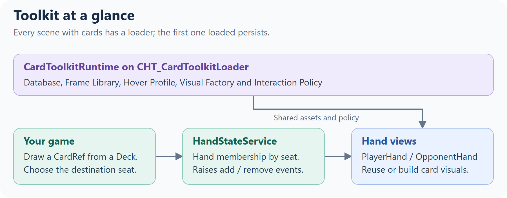
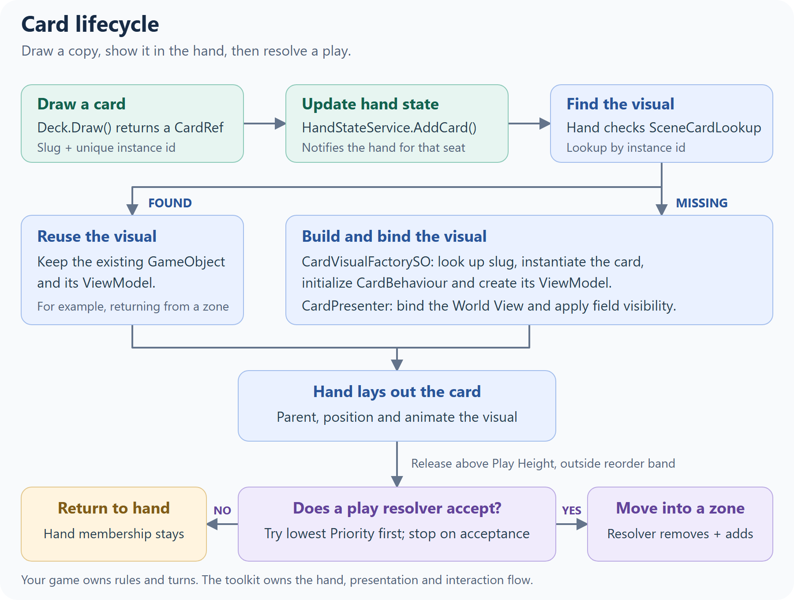
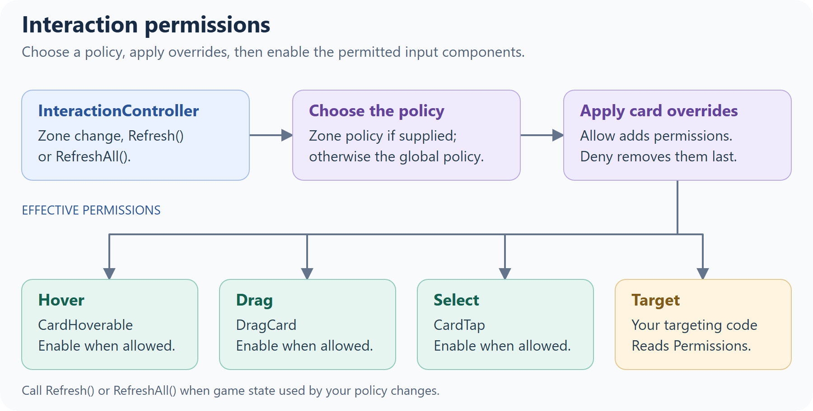
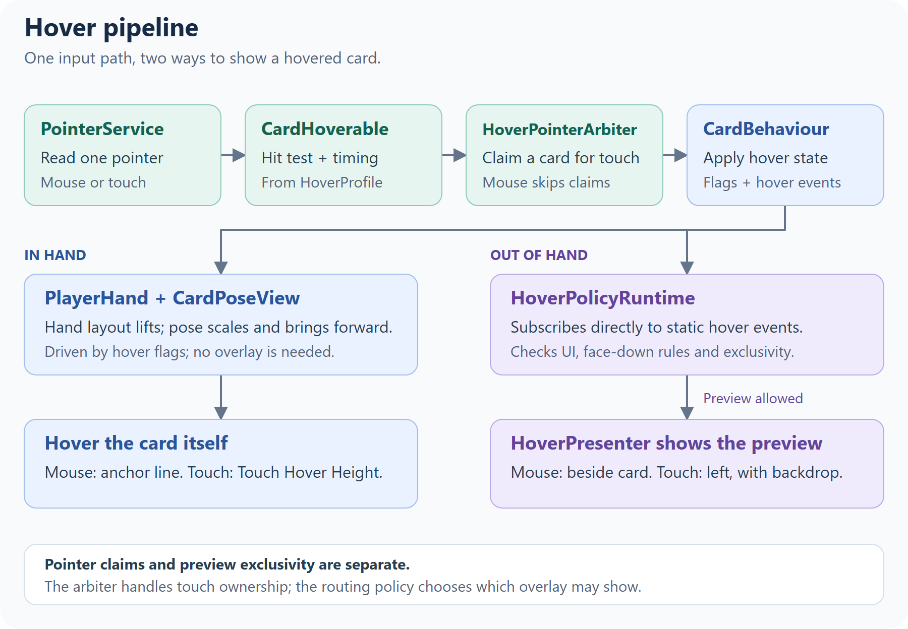
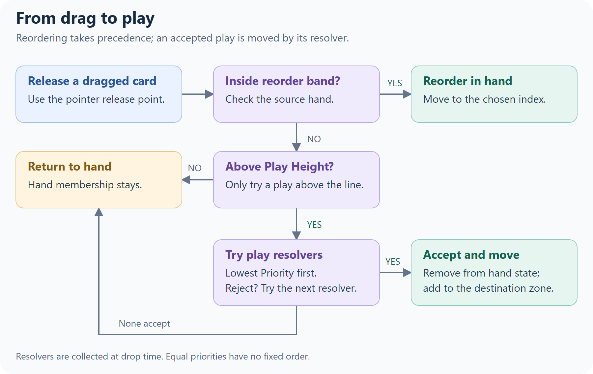
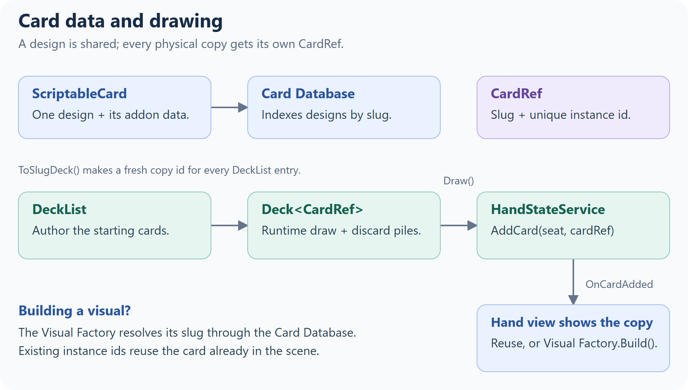
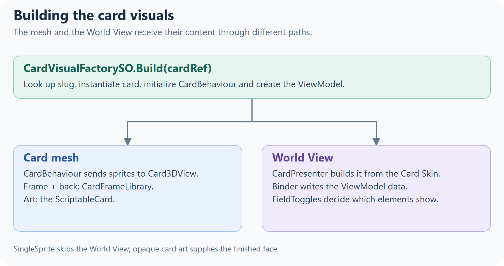
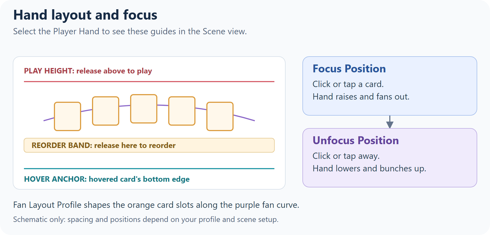

Card Hand Toolkit — API Hub
#How the toolkit fits together, a guide to each part, and a reference entry for every public type.
How to Use This Hub
#- Read Concepts for the big picture.
- Read the Module for the part you're working on. Each one is a short guide: how its pieces fit, common tasks and code.
- Look types up in the A–Z Type Index. Each entry says what the type does, then lists its Inspector settings and key Members, and links to its module under Guide.
New to the toolkit? Start with the Quick Start.
Table of Contents
#Concepts
#
- One runtime hub.
CardToolkitRuntime, on theCHT_CardToolkitLoaderprefab, holds the project-wide references every system reads. Reach it throughCardToolkitRuntime.Instance. - Your code owns the game; the toolkit shows it. Hands never add or remove cards on their own: your code changes
HandStateService(and yourDeck), and the hands follow. The toolkit has no rules engine. Costs, suits, turns and phases belong to your game, through addons, view models and interaction policies. - A card has three parts. A
ScriptableCardis the design, aCardRefis one copy of it in play, and the card GameObject shows that copy. On the GameObject,CardBehaviourholds its state, the card mesh and World View draw it, andCardHoverable,DragCardandCardTaphandle the player's input.
Who owns what?
#| Information | Owner |
|---|---|
| A card design and its addon data | ScriptableCard, listed in the CardDatabase. |
| One copy's identity | CardRef: a slug plus a unique instance id. CardBehaviour carries that identity on its GameObject. |
| Draw and discard pile contents | Your runtime Deck<CardRef>. |
| Hand membership, by seat | HandStateService. Hand views follow its events. |
| Existing card visuals | SceneCardLookup maps instance ids to CardBehaviours; it doesn't own game state. |
| Runtime display data and capabilities | The card's ICardViewModel. Your code changes it and raises OnChanged. |
| Face-down, exhausted, hover and selection state | CardBehaviour, which refreshes the card's views. |
| Binding and field visibility | CardPresenter and HoverPresenter, using the ViewModel and Card Skin. |
| Rules, turns and effects | Your game code. |
Card lifecycle
#
The hand checks SceneCardLookup before building a visual, so a card returning from a zone keeps its existing GameObject and ViewModel. In SingleSprite mode, the presenter skips the World View. The Card Data & Decks, Card Visuals and Zones & Play guides cover each step.
Extend, configure or learn
#Every A–Z entry carries a tag:
- [E] Extend: interfaces and base classes you implement for your own behavior:
ICardZone,IPlayResolver,ILockableZone,IZoneHoverAnchorProvider,CardAddon,ICardViewModel,ICardViewModelFactory,ICardViewBinder,ICardView,IContextualSwitcher,IInteractionPolicy,IInteractionOverride,IHoverPresenter,IPointerSource,IEmptyDeckPolicy,ICardVisualFactory. - [C] Configure: components and assets you set up in the Inspector:
CardToolkitRuntime,PlayerHand,OpponentHand, the example zones,CardSkin,CardFrameLibrary,CardVisualFactorySO,HoverProfile,HoverRoutingPolicy,FanLayoutProfile. - [L] Learn: types you call or read but don't change:
CardBehaviour,HandStateService,Deck,CardPresenter,SceneCardLookup,InteractionController.
Toolkit-owned assets: assets prefixed
CHT_(and everything inSamples/) are replaced when you update the package. Configure your own copies; the Setup Wizard creates them inAssets/CardHandToolkit/Config/.
Modules
#Interaction
#(hover, drag and tap, and what each card allows)
- Includes:
InteractionController,IInteractionPolicy,IInteractionPolicyProvider,DefaultInteractionPolicy,IInteractionOverride/CardInteractionOverride,CardHoverable,DragCard,CardTap,HoverPolicyRuntime,HoverRoutingPolicy,HoverProfile,IHoverPresenter/HoverPresenter,HoverAnchor,PointerService/IPointerSource.

The components on a card
#The card prefab (CHT_CardPlayable_Template, and your CardPlayable_User variant) has one component per interaction. Each reads the pointer from PointerService. Hover and tap ignore the pointer while it's over UI.
CardHoverable: hovering. See Hover below.DragCard: dragging, which starts from a hovered card once the pointer moves past a threshold. Tune the feel on your card prefab: Mouse Drag Threshold and Touch Drag Threshold (pixels), Tilt Strength, Lerp Speed (smoothing), and Drag Plane Z (the depth the card follows while dragged).CardTap: clicking or tapping. See Tap and select below.InteractionController: switches the three above on or off from the card's permissions.
Permissions and policies
#DefaultInteractionPolicy, used unless you replace it, allows:
| Zone | Hover | Drag | Select | Target |
|---|---|---|---|---|
Hand (the Player Hand) |
✓ | ✓ | ✓ | |
Board |
✓ | ✓ | ✓ | |
OpponentHand, Deck, Discard, others |
There are three ways to change this, from broadest to narrowest:
- Globally: write a
ScriptableObjectthat implementsIInteractionPolicy, create an asset from it, and assign it to Override Policy Asset onCardToolkitRuntime(on yourCHT_CardToolkitLoader). - For one zone: implement
IInteractionPolicyProvideron the zone, or on a component next to it. ItsPolicyreplaces the global policy for cards in that zone. - For one card: add a
CardInteractionOverrideand set its Allow and Deny masks. Deny wins over Allow.
A policy is asked again whenever a card changes zone. If yours also depends on game state, such as whose turn it is, call InteractionController.RefreshAll() when that state changes (or Refresh() on one card's controller):
using CardHandToolkit;
using UnityEngine;
[CreateAssetMenu(menuName = "My Game/Turn Interaction Policy")]
public class TurnInteractionPolicy : ScriptableObject, IInteractionPolicy
{
public static bool IsMyTurn = true; // set by your turn system
readonly DefaultInteractionPolicy defaults = new();
public InteractionPerms GetPermissions(CardBehaviour card, InteractionContext ctx)
{
InteractionPerms perms = defaults.GetPermissions(card, ctx);
if (!IsMyTurn)
perms &= ~InteractionPerms.Drag; // look, but don't play
return perms;
}
}
// In your turn system:
TurnInteractionPolicy.IsMyTurn = false;
InteractionController.RefreshAll();
InteractionContext gives the card's Zone and its Owner: Local in the Player Hand, Opponent in an opponent hand, and Neutral everywhere else. To read what a card allows, for example before letting your targeting code pick it, use card.GetComponent<InteractionController>().Permissions.
Hover
#The toolkit has two kinds of hover:
- In the hand, the hovered card lifts, scales and comes forward. Cards can only be hovered while the hand is focused: clicking or tapping a card in the hand raises and fans it out (from its Unfocus Position to its Focus Position), and clicking or tapping anywhere else lowers it. With a mouse, the card lifts until its bottom edge sits on the Player Hand's Hover Anchor line. With touch, hold a finger on the card, and it lifts by Touch Hover Height.
- Out of the hand (on the board, for example), a large preview of the card appears in an overlay. With a mouse, it appears next to the card after Mouse Out Of Hand Hover Delay. With touch, it appears at the left edge after a long press (Touch Long Press Delay; moving more than Touch Long Press Move Threshold pixels cancels it), and tapping the backdrop closes it.
Most of the hover feel lives in the HoverProfile assigned on CardToolkitRuntime: the delays above, Hover Scale, Hover Anim Time, Hover Z Offset, the overlay offsets, and the highlight colors (Default Highlight Color for hovered or selectable cards, Selected Highlight Color for selected ones).
Out-of-hand previews are routed by HoverPolicyRuntime (on CHT_CardToolkitLoader) using a HoverRoutingPolicy asset (CHT_HoverRoutingPolicy by default):
- Exclusive Preview: only one preview at a time. Last Enter Wins decides whether a newly hovered card replaces it.
- Suppress When Pointer Over UI: no preview while the pointer is over UI.
- Allow Face Down Preview: off by default, so face-down cards never show a preview.
The preview itself is drawn by a HoverPresenter in the scene, from the card's World View; see Card Visuals for its layout. If the scene has none, HoverPolicyRuntime creates one from its Presenter Prefab.

HoverPointerArbiter claims a card per touch pointer; mouse claims are skipped by default. Overlay exclusivity is a separate decision made by HoverPolicyRuntime, which subscribes directly to CardBehaviour.OnAnyHoverEnter and OnAnyHoverExit.
For a custom hand's mouse-hover placement, implement IZoneHoverAnchorProvider. The Player Hand uses HoverPoseSolver to align the card's bottom edge with that anchor.
Tap and select
#A click (press and release on the same card) or a short tap calls TapCard() on the card. A touch held longer than Touch Long Press Delay counts as a hover instead.
- Every tap raises
OnCardTappedon the card and the staticCardBehaviour.OnAnyCardTapped. - If the card is selectable (
card.SetSelectable(true), which also highlights it), a tap toggles it between selected and unselected and raisesOnCardSelected/OnCardUnselected(and the staticOnAnyCardSelected/OnAnyCardUnselected). You can also callSetSelected(bool)from code.
For example, to let the player pick a card from their hand:
foreach (CardRef cardRef in HandStateService.Instance.GetHand(0))
if (SceneCardLookup.TryGet(cardRef.InstanceId, out CardBehaviour card))
card.SetSelectable(true);
CardBehaviour.OnAnyCardSelected += picked => Debug.Log($"Picked {picked.Definition.cardName}");
Pointer input
#PointerService polls one IPointerSource once per frame, so every component sees the same pointer. On desktop the mouse is reported every frame; on touch devices the first finger is, and touch takes priority over the mouse. The toolkit picks the source for your project's input setting: the Input System when the package is installed and active, otherwise the legacy Input Manager. To drive cards from something else, such as a gamepad-controlled cursor, implement IPointerSource and call PointerService.SetSource(yourSource). Both are in the CardHandToolkit.Internal namespace.
Zones & Play
#(where cards live, and how a drag becomes a play)
- Includes:
ICardZone,IPlayResolver,ILockableZone,IPlayHeightZone,IReorderBandZone,CardZoneTracker,ZoneType,ZoneCardFacing, and the example zonesLineBoardZoneandSingleSlotZone.
Zones and resolvers
#- A zone (
ICardZone) holds and lays out cards: the hands, the board zones, and the deck and discard piles. A card belongs to the zone it's parented under, and itsCardZoneTrackerkeeps track of which one that is. - A resolver (
IPlayResolver) decides whether to accept a card the player plays. The example board zones are both, but a resolver doesn't have to be a zone: an area that discards whatever is played onto it only needs to be a resolver.
How a play works
#
- The player drags a card out of the Player Hand. Above the hand's Play Height, the card highlights.
- When the card is released there,
DragCardcollects every activeIPlayResolverin the loaded scenes, lowestPriorityfirst. They're collected at each play, so zones added at runtime are included. - It calls
TryResolvePlayon each with aPlacementQuery: the card, the zone it came from, and where the pointer was released (screenPos, andpointerRayfrom the camera through it). The first resolver that returnsallowed = truetakes the card, and the rest aren't asked. - If none accepts it, the card returns to its place in the hand.
Releasing the card over the hand itself (inside its reorder band) reorders the hand instead of playing.
The resolver that accepts a card moves it. The example zones do it in two steps:
- Remove the card from where it came from:
HandStateService.Instance.RemoveCard(seat, card.ToCardRef())for a hand (the hand then lets go of it), orfromZone.RemoveCard(card)for any other zone. - Add it with
AddCard(card), which parents it, applies the zone's Card Facing, and lays it out.
On the board, the default interaction policy lets a card be hovered and selected, but not dragged. See Interaction to change that.
The example zones
#LineBoardZonelays cards out in a centered row, up to Capacity (default 40). Spacing squeezes to fit Max Width.Cardslists them left to right.SingleSlotZoneholds one card at its Slot transform (or its own position). With Allow Replace When Occupied, a new card sends the old one back to its home hand.Cardis the card in the slot, ornull.- Both have a Priority (default
1), a Drop Area, a Card Facing applied to every card that enters (FaceUp,FaceDownorKeepCurrent), and a Locked checkbox. A locked zone rejects every play, but code can still place cards withAddCard.
By default, the example zones ignore where the card is dropped. With Drop Area at
(0, 0), they accept a play anywhere above Play Height, so when several are unlocked, the lowest Priority takes every play (equal priorities have no fixed order). To let the drop point choose the zone, give each one a Drop Area: a rectangle in the zone's local units, centered on the zone (on the Slot forSingleSlotZone), drawn as a yellow gizmo when the zone is selected. A play released outside it passes to the next resolver. Otherwise, lock the zones that shouldn't take plays right now, as the sample does between rounds.
Moving cards from code
#Game code can move cards between hands and zones directly:
// Hand to zone: here, the opponent plays a card from its hand
HandStateService.Instance.RemoveCard(seat, cardRef);
if (SceneCardLookup.TryGet(cardRef.InstanceId, out CardBehaviour card))
slot.AddCard(card);
// Zone to zone
slot.RemoveCard(card);
row.AddCard(card);
// Zone to hand: the hand finds the existing card and takes it back
row.RemoveCard(card);
HandStateService.Instance.AddCard(seat, card.ToCardRef());
Sample_GameManager uses the first two, and SingleSlotZone uses the third when it replaces a card.
Writing a resolver
#Implement IPlayResolver on any component in the scene. This one destroys cards dropped on it:
using CardHandToolkit;
using UnityEngine;
public class BurnPile : MonoBehaviour, IPlayResolver
{
[SerializeField] Vector2 size = new Vector2(3f, 4f);
[SerializeField] int priority = 0; // asked before the example zones (1)
public int Priority => priority;
public PlacementResult TryResolvePlay(PlacementQuery query)
{
if (!query.IsOver(transform, size))
return default; // not accepted: the next resolver is asked
HandStateService.Instance.RemoveCard(query.fromZone.SeatId, query.card.ToCardRef());
Destroy(query.card.gameObject);
return new PlacementResult { allowed = true };
}
}
- The toolkit only reads
allowed.slotIndex,worldPosandworldRotare there for your own code. - Plays start from a hand with a Play Height (the Player Hand), so
query.fromZoneis that hand. query.IsOver(target, size)checks the release point against a rectangle centered ontarget.query.TryGetLocalPoint(target, out Vector3 local)gives the point itself, intarget's local space. Both usetarget's local XY plane (the plane a zone's cards lie in), so they work at any depth, on a tilted table, and with perspective or orthographic cameras.- For games where placement matters, use
TryGetLocalPointin your zone'sTryResolvePlayand place the accepted card atlocalinstead of at a fixed layout position. Store each card's position soAlignCardscan restore it. - To hold the cards it accepts, also implement
ICardZone(SingleSlotZoneis a short example to copy), andILockableZoneif your game needs to switch it off.
Card Data & Decks
#(what a card is, and how cards get from a deck into a hand)
- Includes:
ScriptableCard,CardAddon,CardDatabase,CardRef,DeckList,Deck,IEmptyDeckPolicy(ReshuffleOnEmpty,NoReshufflePolicy),HandStateService,SceneCardLookup,VisualDeck,VisualDiscard.

Card data
#ScriptableCardis one card design: Slug (its unique id), Card Name, Rules Text, Frame Key, Tags, Card Art and Addons. Create one with Create ▸ Card Toolkit ▸ Card. The slug is filled in from the asset name when you create it. Keep it unique, and don't change it once your game has saves or data files that refer to it.CardAddonholds game-specific data such as cost or suit. Subclass it, then add one to a card with + Add New Addon in the card's Inspector; it's saved inside the card asset. Read it withcard.GetAddon<T>(). Quick Start Section 6 walks through this.CardDatabaselists every card your game can build.CardToolkitRuntimeindexes it by slug when it starts, and the Visual Factory looks cards up there. A card that's missing from it can't be built, and the error names its slug.
One card, many copies: CardRef
#A CardRef is one copy of a card: a CardSlug (which design) plus an InstanceId (which copy). Two Fireballs in a deck share a slug but have different instance ids, and CardRefs compare by instance id.
DeckList.ToSlugDeck()makes one for each card in the list. To make one yourself:new CardRef(System.Guid.NewGuid().ToString("N"), "fireball").- From a card in the scene:
card.ToCardRef(). From aCardRefto its card in the scene:SceneCardLookup.TryGet(cardRef.InstanceId, out CardBehaviour card).
Decks
#A DeckList asset lists the cards in a deck; list a card twice for two copies. deckList.ToSlugDeck(policy) creates a runtime Deck<CardRef> in list order, so shuffle it before drawing. The Deck is a plain C# object that your game code owns.
| Member | What it does |
|---|---|
Draw(count = 1) |
Takes cards from the top. When the draw pile is empty, it asks the empty-deck policy first, and returns fewer cards if the deck runs out. |
Peek(count = 1) |
The top cards, without drawing them. |
InsertTop(card), InsertBottom(card) |
Puts a card back into the draw pile. |
Discard(card) |
Adds a card to the discard pile. |
Shuffle(), ShuffleRange(start, count) |
Shuffles the draw pile, or part of it (a negative start counts from the bottom). |
Reshuffle() |
Moves the discard pile into the draw pile and shuffles. |
Count, DiscardCount, SnapshotDrawPile(), SnapshotDiscardPile() |
Pile sizes and contents (draw pile: index 0 is top; discard pile: last entry is top). |
CardDrawn, CardAdded, CardDiscarded, Shuffled, Reshuffled, CountsChanged, EmptyEvent |
Events for your UI and rules. CountsChanged passes the draw and discard counts; EmptyEvent fires when a draw finds the deck empty and the policy can't refill it. |
The empty-deck policy decides what Draw does on an empty draw pile. ReshuffleOnEmpty (the default) shuffles the discard pile back in. NoReshufflePolicy doesn't, as in games where an empty deck ends the game. Implement IEmptyDeckPolicy<CardRef> for your own rule: return true once the draw pile has cards again.
Deck<CardRef> deck = deckList.ToSlugDeck(new ReshuffleOnEmpty<CardRef>());
deck.Shuffle();
foreach (CardRef card in deck.Draw(5))
HandStateService.Instance.AddCard(0, card); // seat 0: the local player
Hands: HandStateService
#HandStateService.Instance is the single record of which cards are in each seat's hand. Seat 0 is the local player (the Player Hand's Seat Id), and opponents use 1 and up. Hand views never add or remove cards on their own: change a hand through the service, and every hand view with that seat follows.
AddCard(seat, cardRef): the hand shows the card, reusing it if it's already in the scene, so a card coming back from the board slides back in.RemoveCard(seat, cardRef): the hand stops laying the card out and lets go of it. The card stays where it is, so move it to a zone, discard it or destroy it.Clear(seat)does this for every card in the hand.GetHand(seat),OnCardAdded,OnCardRemoved.
Showing the deck and discard pile
#VisualDeck and VisualDiscard (prefabs CHT_DeckVisual and CHT_DiscardVisual) show a Deck's piles as stacks of cards. Bind them with Initialize(deck) after creating the deck.
Both share Max Visible Layers (default 8, minimum 1). The top layers use the normal fan layout; extra cards sit directly behind the bottom visible layer with separate depths to avoid flickering. Every card object is retained, and the last entry in each view's card list remains on top. The selected pile's gizmo previews the visible layers using the same layout.
- With a
VisualDeck, the draw pile is built face down, and drawn cards travel from it into the hand. Without one, drawn cards appear at the hand. It builds a card object for every card in the pile. - With a
VisualDiscard,deck.Discard(card.ToCardRef())moves the card onto the pile, face up. Remove the card from its zone first. Without one, discarding only changes the data, so destroy the card yourself, asSample_GameManagerdoes.
Card Visuals
#(how a card is built and drawn, and how to make it look like yours)
- Includes:
CardVisualFactorySO/ICardVisualFactory,CardBehaviour,CardFrameLibrary,CardSkin,CardColorPalette,ICardViewModel,ICardViewModelFactory/DefaultViewModelFactory,ICardViewBinder/DefaultCardViewBinder,FieldToggle,CardPresenter,IContextualSwitcher,ICardView,Card3DView,CardPoseView.

Two layers: the mesh and the World View
#Each card is drawn in two layers, and they get their content from different places:
- The card mesh draws the frame, the art and the back, through
Card3DView. The frame and back come from theCardFrameLibrary(a card's Frame Key picks one of its Frames; empty or unmatched keys use the Default Frame). The art is the card's Card Art, drawn over the frame using the art's alpha, so transparent areas of the art show the frame through. The card prefab's materials only affect how cards look in the editor.CardPoseViewanimates the mesh: the flip for face-down cards, the tilt for exhausted (tapped) cards, and the hover scale. - The World View is a UI prefab on the card that shows the text and any other elements: name, rules text, a cost, a suit icon. It's set on the
CardSkin. Every World View is laid out at 1000×1400 and scaled to fit the card (the skin's World Scale, where 1 fills it), and the same layout is reused for the hover preview at Overlay Scale. Use anIContextualSwitcherfor deliberate differences between the two.
Quick Start Section 5 walks through restyling both layers, and Appendix A covers preparing art.
From card data to the screen
#Three pieces sit between a ScriptableCard and the World View, so each can be replaced on its own:
- View model (
ICardViewModel): the data a card displays:Title,RulesText,ArtSprite,CardFrameSprite, andCapabilities, the custom fields this card has, such as"Cost". One is created per card by the View Model Factory on the Visual Factory. The default (CHT_ViewModelFactory) creates aDefaultCardVM, which fills the built-in fields. When a value changes, the view model raisesOnChanged, and everything that shows the card updates, including an open hover preview. - Binder (
ICardViewBinder, on the World View): writes the view model's data into the UI. It only sets data. The built-inDefaultCardViewBinderfills the name, rules text, art and frame; subclass it and overrideRefresh(callingbase.Refresh()first) to fill your own elements. It also offersPalette(the skin'sCardColorPalette) andSetTextColor/ResetTextColor, which tint a TextMeshPro text and its glow together. - Field toggles (
FieldToggle, on World View elements): decide what's visible. A built-in field shows when the skin's Enabled Fields includes it and the view model has data for it. A custom field shows when its key is in the skin's Enabled Custom Fields and the view model has that capability. Appendix B has the full rules.
To show your own data, such as a cost:
- Store it on the card with a
CardAddon. - Read it in your own view model, and call
SetCapability("Cost", true)on cards that have it. - Return that view model from your own
ICardViewModelFactory, and assign it on the Visual Factory. - Write the value into the World View in a binder that extends
DefaultCardViewBinder. - Add a
FieldTogglewith the custom keyCostto the element, and addCostto the skin's Enabled Custom Fields.
Quick Start Section 6 builds this step by step, with Cost and Suit examples.
Changing cards at runtime
#- Data: change it in your view model and raise
OnChanged.Sample_CardVM.SetCostdoes this. Reach a card's view model throughcard.GetComponent<CardPresenter>().ViewModel. - State:
CardBehaviourhasSetFaceDown,SetExhausted(tapped),SetHighlighted(optionally with a color),SetSelectable,SetSelectedandSetDisabled. Every component under the card that implementsICardViewgetsRefresh(state)when these change. That's how you add your own reaction, such as dimming disabled cards, which the toolkit doesn't draw by default. - Card backs: the Frame Library's Default Card Back is used everywhere. To switch every card to another back from its Card Backs list, call
CardToolkitRuntime.Instance.SetGlobalBackOverride("key").
Finished card images: SingleSprite mode
#If every card is one finished image, with no separate text or fields, set the Card Skin's Display Mode to SingleSprite, and put each card's finished image (5:7, opaque) in its Card Art. Cards then skip the World View; the opaque art covers the frame on the mesh; and the hover preview shows the art on its own.
Hands & Layout
#(the player's and opponents' hands, and how cards fan out)
- Includes:
PlayerHand,OpponentHand,HandViewBase,FanLayoutProfile,FanSeatModifiers,FanLayout/FanPose,HoverAnchor.

The Player Hand
#PlayerHand shows the cards HandStateService holds for its Seat Id (0, the local player) and handles everything the player does with them: focusing, hovering, reordering and playing.
- Focus: the hand starts lowered at its Unfocus Position, with its cards bunched together. Clicking or tapping one of its cards moves it to its Focus Position (at Hand Transition Speed) and fans the cards out. Cards in the hand can only be hovered while it's focused.
- Playing and reordering: a card dragged above Play Height is played (see Zones & Play). Released inside the reorder band, a trigger collider on the hand sized from the fan layout (Band Height, Band Depth, Min Band Width), it moves to that spot in the hand instead.
- Hover Anchor: a child object marking where a mouse-hovered card's bottom edge lifts to. Keep it at or below the bottom edge of the screen.
- Cards placed under the hand in the editor are adopted when the scene starts, for quick tests. They aren't in
HandStateService, so prefer drawing cards in.
Opponent hands
#Add one OpponentHand per opponent (prefab CHT_OpponentHand), with Seat Id 1, 2 and so on, and position and rotate it where that opponent sits. Its cards are face down, and the default interaction policy doesn't let the player hover or drag them. Change an opponent's hand through HandStateService with its seat id, and reveal a card with card.SetFaceDown(false). Seat Modifier tightens or loosens its fan (0.85 by default).
Fan Layout Profile
#A FanLayoutProfile asset shapes the fan. The Player Hand, the opponent hands and the deck and discard piles each reference one; they use the shipped CHT_FanLayoutProfile until you assign your own (Create ▸ Card Toolkit ▸ Config ▸ Fan Layout Profile). Each curve is read from 0 (the leftmost card) to 1 (the rightmost):
| Setting | What it controls |
|---|---|
| X Curve | Horizontal position across the hand. |
| Y Curve × Height Scale | How high each card sits: the arc of the fan. |
| Z Curve × Z Amplitude, + Base Z | Depth: which cards are drawn in front. |
| Rot Curve × Rot Degrees Scale | How much each card tilts. |
| Max Hand Spread | The hand stops widening past this many cards; more cards squeeze closer together. |
Each hand or pile also has a FanSeatModifiers (Seat Modifier on hands, Spread Modifier on piles), whose Spread Mul scales the spread, arc and tilt: below 1 is tighter, and the piles use a small negative value to stack cards almost on top of each other. Select a hand or pile to preview its fan as a gizmo.
Piles calculate their spread from at most Max Visible Layers cards, so large decks keep distinct offsets between the visible layers. This limit applies only to VisualDeck and VisualDiscard; hand layouts still use every card.
A–Z Type Index
#Legend: [E] Extend/Implement • [C] Configure (Inspector) • [L] Learn-only
Card3DView [C]
#On the card mesh. Draws the frame, art and back through material property blocks, and the highlight glow (selected, highlighted or selectable cards). Set up in the card prefab; you rarely touch it.
- Inspector: Card Mesh Renderer, Glow Mesh Renderer, Back Material Index, Front Material Index.
- Members:
ICardView's, whichCardBehaviourcalls. - Guide: Card Visuals
CardAddon [E]
#Base class for game-specific card data (cost, suit, attack…). Subclass it and add your own fields, then add one to a card with + Add New Addon in the ScriptableCard Inspector. It's saved inside the card asset.
- Members: none of its own; read yours with
scriptableCard.GetAddon<T>(). - Guide: Card Data & Decks; Quick Start Section 6 builds Cost and Suit addons.
CardBehaviour [L]
#The root component of every card: its data, its instance id and its state flags (CardStateFlags). Game code talks to cards through it, and it passes state changes on to every ICardView under the card.
- Members:
- Identity:
Definition(theScriptableCard),InstanceId,ToCardRef(). - State:
VisualState,SetFaceDown,SetExhausted,SetHighlighted(bool[, Color]),SetSelectable,SetSelected,SetDisabled,TapCard(),SnapView(),ForceRefresh(). - Events:
OnCardTapped,OnCardSelected,OnCardUnselected,OnVisualStateChanged, and the staticOnAnyCardTapped,OnAnyCardSelected,OnAnyCardUnselected,OnAnyHoverEnter,OnAnyHoverExit,OnAnyDragStart,OnAnyDragEnd.
- Identity:
- Guide: Card Visuals; Interaction for taps and selection.
CardColorPalette [C]
#A list of named colors (suits, rarities, factions…) for your binders to read by key. Assign one to a CardSkin's Color Palette; binders built on DefaultCardViewBinder read it through Palette. Create one with Create ▸ Card Toolkit ▸ Config ▸ Card Color Palette.
- Inspector: Colors (each entry is a Key and a Color).
- Members:
TryGet(string key, out Color color)(keys are case-sensitive). - Guide: Card Visuals; Quick Start Section 6, step 8 uses it for suit colors.
CardDatabase [C]
#Every ScriptableCard your game can build. Assign it on CardToolkitRuntime, which indexes it by slug at startup. A card missing from it can't be built, and duplicate or empty slugs log a warning.
- Inspector: Cards. To add many at once, lock the Inspector and drag cards onto the Cards label.
- Members:
cards; at runtime, look cards up withCardToolkitRuntime.CardBySlug. - Guide: Card Data & Decks
CardFrameLibrary [C]
#The frames and card backs cards are drawn with, assigned on CardToolkitRuntime. A card's Frame Key picks a frame; an empty key uses the Default Frame, and a key with no match warns once and uses it too.
- Inspector: Default Card Back, Card Backs (key + sprite, for
SetGlobalBackOverride), Default Frame, Frames (key + sprite). - Members:
GetCardFrame(key),GetCardBack(key),DefaultFrame,DefaultCardBack. - Guide: Card Visuals; Quick Start Section 5 sets your own frame and back.
CardHoverable [C]
#On every card. Detects hover: pointer-over in the hand, and a short delay (mouse) or long press (touch) elsewhere. Its timings come from the HoverProfile. It's switched off when the card's permissions don't include Hover.
- Members:
Hovered. - Guide: Interaction
CardPoseView [L]
#On the card's view root. Animates the card mesh from its state: flips face-down cards, tilts exhausted (tapped) ones, and scales and brings forward cards hovered in the hand, using the Hover Profile's Hover Scale, Hover Anim Time and Hover Z Offset.
- Guide: Card Visuals
CardPresenter (sealed) [L]
#On each card: instantiates the Card Skin's World View Prefab, binds the card's view model to it, and shows or hides fields. Every World View is laid out at ViewDesignSize (1000×1400) and scaled to fit the card, so a layout looks the same on cards, in the hover overlay and in Prefab Mode. In SingleSprite mode it builds no World View.
- Inspector: View Anchor (where the World View goes on the card).
- Members:
ViewModel(the card's view model, for runtime changes),Skin,ViewAnchor,ViewDesignSize,ApplyDesignSize(RectTransform). - Guide: Card Visuals
CardRef [L]
#One copy of a card: a CardSlug (which ScriptableCard it is) plus a unique InstanceId (which copy). Two CardRefs are equal when their instance ids match. DeckList.ToSlugDeck() creates them for you.
- Members:
CardRef(string instanceId, string cardSlug),InstanceId,CardSlug. Get one from a card withcard.ToCardRef(), and the card back withSceneCardLookup.TryGet(instanceId, out card). - Guide: Card Data & Decks
CardSkin [C]
#Global look settings for every card, assigned on the Visual Factory: which World View cards use, how big it appears on cards and in the hover overlay, which fields show, and colors.
- Inspector: World View Prefab; Overlay View Prefab Optional (empty = the overlay reuses the World View); World Scale (1 = the view fills the card); Overlay Scale (on-screen size of the preview; 0.5 shows the 1000×1400 view at 500×700); Display Mode (
Modular, orSingleSpritefor finished card images); Enabled Fields; Enabled Custom Fields; Color Palette. - Members: the fields above,
GetWorldViewPrefab(),GetOverlayViewPrefab(). - Guide: Card Visuals
CardTap [C]
#On every card. Turns a click, or a tap shorter than the Hover Profile's Touch Long Press Delay, into CardBehaviour.TapCard(), which raises the tap events and toggles selection on selectable cards. It's switched off when the card's permissions don't include Select.
- Guide: Interaction
CardToolkitRuntime [C]
#The toolkit's runtime hub, on the CHT_CardToolkitLoader prefab, which every scene with cards needs (the Setup Wizard adds and wires it). It holds the project-wide references every system reads and persists across scenes; when scenes change, the first instance stays and later ones remove themselves. It logs an error on Play if no instance exists, and adds an EventSystem with the right input module to any scene without one. Cards need no dedicated layer: hover, drag and tap raycast against Card Raycast Mask and ignore trigger colliders.
- Inspector: Frame Library, Database, Hover Profile, Visual Factory, Override Policy Asset (optional; see Interaction), Card Raycast Mask (narrow it if other colliders block cards).
- Members:
Instance,IsReady,CardBySlug,FrameLibrary,Database,HoverProfile,VisualFactory,InteractionPolicy,CardRaycastMask,RaycastCards(Ray, out RaycastHit),GetCardBack(),SetGlobalBackOverride(key). - Guide: Concepts; Card Visuals
CardVisualFactorySO [C]
#The built-in ICardVisualFactory (the Setup Wizard creates CardVisualFactory_User). Builds a card: looks up its data by slug, instantiates your card prefab, initializes its CardBehaviour, creates its view model and initializes its CardPresenter.
- Inspector: Card Prefab, Global Card Skin, View Model Factory SO (an
ICardViewModelFactory;CHT_ViewModelFactoryby default). - Members:
Build(CardRef, Transform spawnAt, bool knownToLocal = true)(knownToLocal: falsebuilds it face down),VMFactory. - Guide: Card Visuals
CardZoneTracker [C]
#On every card. Tracks the ICardZone the card is in (the nearest one among its parents) and its home zone, the hand it belongs to. SingleSlotZone sends a replaced card back to its home zone's seat.
- Inspector: Home Mode:
FirstHandEncounter(default: the first hand the card enters),FirstZoneEncounter, orExplicitOnly(set only bySetHomeZone). - Members:
CurrentZone,HomeZone,SetHomeZone(ICardZone),OnZoneChanged(previous zone, new zone). - Guide: Zones & Play
Deck [L]
#Deck<TId> is a runtime draw pile plus discard pile, a plain C# object your game code owns. The toolkit uses Deck<CardRef>, created from a DeckList. Index 0 is the top of the draw pile; the last entry is the top of the discard pile.
- Members:
Draw(count),Peek(count),InsertTop,InsertBottom,Discard,Shuffle(),ShuffleRange(start, count),Reshuffle(),Count,DiscardCount,SnapshotDrawPile(),SnapshotDiscardPile(); eventsCardDrawn,CardAdded,CardDiscarded,Shuffled,Reshuffled,CountsChanged,EmptyEvent. - Guide: Card Data & Decks, with a table of what each member does.
DeckList [C]
#The cards in a deck, as an asset (Create ▸ Card Toolkit ▸ Deck List). List a card twice for two copies.
- Inspector: Cards.
- Members:
ToSlugDeck(IEmptyDeckPolicy<CardRef> policy = null)creates a newDeck<CardRef>in list order, with a freshCardReffor every entry. Shuffle it before drawing. - Guide: Card Data & Decks
DefaultInteractionPolicy [L]
#The interaction policy used when no Override Policy Asset is assigned on CardToolkitRuntime. In the hand: hover, drag and select. On the board: hover, select and target. Everywhere else: nothing. Your own policy can call it for its defaults and change only what it needs.
- Members:
GetPermissions(card, ctx). - Guide: Interaction, with the full table and an example that builds on it.
DefaultCardViewBinder [E]
#The built-in ICardViewBinder, on the World View. Fills the name, rules text, art and frame from any view model (art and frame are used by the hover preview; cards in the scene draw those on the mesh). Every slot is optional. Subclass it to fill your own elements.
- Inspector: Title, Rules Text (TextMeshPro texts), Art, Frame (Images).
- Members (for subclasses):
ViewModel,Skin,Palette,virtual Refresh()(callbase.Refresh()first),SetTextColor(TMP_Text, Color)(tints the text and its underlay/glow; texts with the same tint share one material copy),ResetTextColor(TMP_Text). - Guide: Card Visuals; Quick Start Section 6 subclasses it.
DefaultViewModelFactory / DefaultCardVM [L]
#The built-in view model factory (asset CHT_ViewModelFactory) and the view model it creates. DefaultCardVM fills the built-in fields from the ScriptableCard and has no custom fields. Replace both when your cards show custom data.
- Members:
Create(ScriptableCard);DefaultCardVM.RecomputeAll(),SetCapability(key, show). - Guide: Card Visuals
DragCard [C]
#On every card. Drags a hovered card once the pointer moves past a threshold, and on release either reorders the hand, plays the card (above Play Height), or lets it return. It's switched off when the card's permissions don't include Drag.
- Inspector: View Root, Cam (defaults to the main camera), Touch Drag Threshold and Mouse Drag Threshold (pixels), Tilt Strength, Lerp Speed, Drag Plane Z.
- Members:
IsDragging; staticAnyDraggingandActiveDragCount(the number of cards currently being dragged). - Guide: Interaction; Zones & Play for what happens on release.
FanLayout / FanPose [L]
#The math behind the fan: FanLayout.ComputeFromProfile turns a card count, a hand width, a FanLayoutProfile and FanSeatModifiers into one FanPose (local position and rotation) per card. Hands and piles call it; use it yourself for a custom hand view. In CardHandToolkit.Internal.
- Members:
ComputeFromProfile(count, handSize, profile, mods),FindCurvePositionForX(x, handSize, profile);FanPose.Index,LocalPosition,LocalRotation. - Guide: Hands & Layout
FanLayoutProfile [C]
#The shape of a fan of cards, shared by hands and piles (CHT_FanLayoutProfile by default; Create ▸ Card Toolkit ▸ Config ▸ Fan Layout Profile for your own).
- Inspector: X Curve, Y Curve, Z Curve, Rot Curve (each read from 0, the leftmost card, to 1, the rightmost), Max Hand Spread, Height Scale, Z Amplitude, Base Z, Rot Degrees Scale.
- Related:
FanSeatModifiers(Spread Mul), set per hand or pile. - Guide: Hands & Layout, with what each setting controls.
FieldToggle [C]
#On a World View element. Shows or hides it from the Card Skin's enabled fields and the view model's data and capabilities. CardPresenter and HoverPresenter apply every toggle in the view.
- Inspector: Builtin (a
CardField: Title, Art, Card Frame, Rules Text), Custom Key, Invert (hide when it would show), Targets (objects to toggle; empty toggles its own GameObject). - Members:
Apply(bool shouldShow). - Guide: Card Visuals; Quick Start Appendix B has the full rules.
HandStateService [L]
#The single record of which cards are in each seat's hand (seat 0 is the local player). Hand views follow it and never change hands on their own.
- Members:
Instance,AddCard(seat, cardRef),RemoveCard(seat, cardRef),Clear(seat),GetHand(seat),OnCardAdded,OnCardRemoved. Removing a card doesn't destroy it: the hand lets go of it, and your code moves, discards or destroys it. - Guide: Card Data & Decks
HandViewBase [L]
#Base class of PlayerHand and OpponentHand: a seat id, and the two handlers a hand view implements to follow HandStateService. Extend it (and implement ICardZone) for a hand view of your own.
- Inspector: Seat Id (
0is the local player). - Members:
SeatId,IsLocalPlayer; abstractOnCardAdded(seat, cardRef)andOnCardRemoved(seat, cardRef), which must ignore other seats. - Guide: Hands & Layout
HoverAnchor [C]
#A child of the Player Hand whose gizmo (a cyan line) marks where the bottom of a mouse-hovered card lifts to. Keep it at or below the bottom edge of the screen. Its position is set from a reference card's size.
- Inspector: Reference Card (a card prefab, used to measure the card's height).
- Members:
GetCardYOffset()returns half the reference card's view collider height, adjusted for its scale. Used to position the anchor relative to its parent. - Guide: Interaction
HoverAnchorInfo / AnchorSpace [L]
#Anchor data returned by IZoneHoverAnchorProvider for mouse-hover placement. Both types are in CardHandToolkit.
- Members:
HoverAnchorInfo.Anchor(the line's Transform),Space(AnchorSpace.WorldorZoneLocal) andMarginY(extra clearance in world units). InZoneLocalmode, the solver interprets the anchor's local position relative to the provider'sZoneRoot. - Guide: IZoneHoverAnchorProvider; Interaction.
HoverPolicyRuntime [C]
#On CHT_CardToolkitLoader. Routes out-of-hand hovers to the HoverPresenter as previews, following its HoverRoutingPolicy, and hides previews when a drag ends or the scene changes.
- Inspector: Policy (a
HoverRoutingPolicy), Presenter Prefab (used when the scene has noHoverPresenter). - Members:
Instance,ForceHideAll(), staticIsPointerOverUI(pointerId). - Guide: Interaction
HoverPoseSolver [L]
#Internal mouse-hover placement helper in CardHandToolkit.Internal. The Player Hand uses the zone's anchor and the card's footprint to find a local Y where the card's bottom rests on the anchor line.
- Members:
TryBottomToAnchorY(CardBehaviour card, IZoneHoverAnchorProvider zoneAnchor, ICardFootprint footprint, out float targetLocalY)returnsfalsewhen required data is missing; the caller chooses a fallback.ICardFootprint, also internal, suppliesTryGetBottomOffsetWorld(out float). - Guide: Interaction; IZoneHoverAnchorProvider.
HoverPresenter / IHoverPresenter [C]/[E]
#HoverPresenter is the overlay (prefab CHT_HoverPresenter, with its own Canvas) that shows the large preview of an out-of-hand hovered card. With a mouse it appears next to the card; with touch it appears at the left edge over a backdrop that closes it when tapped. Implement IHoverPresenter to show previews your own way.
- Inspector: Card Panel Root (where the card's World View is placed), Backdrop. The preview's size comes from the Card Skin's Overlay Scale.
- Members:
ShowPreview(card, isMouse),HidePreview(card).IHoverPresenteralso has static helpers for deciding which fields to show:BuildVisibleCustomKeysandToggleAllFieldsBasedOnData. - Guide: Interaction; Card Visuals for the preview's layout.
HoverProfile [C]
#Hover timings and feel, assigned on CardToolkitRuntime (the Setup Wizard creates one).
- Inspector: Mouse: Mouse Hover Timeout, Mouse Out Of Hand Hover Delay, Anchor Margin Y, Overlay Mouse Offset. Touch: Touch Long Press Delay, Touch Long Press Move Threshold, Touch Hover Height, Overlay Touch Edge Margin. Animation: Hover Scale, Hover Anim Time, Hover Z Offset. Colors: Default Highlight Color, Selected Highlight Color.
- Guide: Interaction
HoverRoutingPolicy [C]
#Rules for out-of-hand previews, assigned on HoverPolicyRuntime (CHT_HoverRoutingPolicy by default; Create ▸ Card Toolkit ▸ Config ▸ Hover Routing Policy for your own).
- Inspector: Exclusive Preview, Suppress When Pointer Over UI, Allow Face Down Preview, Suppress Out Of Hand When In Hand, Last Enter Wins.
- Guide: Interaction
ICardView [E]
#Anything under a card that reacts to its sprites and state. CardBehaviour finds every ICardView under the card when it's created, sends them the frame, art and back, and calls Refresh(state) whenever a state flag changes. Card3DView and CardPoseView implement it; implement it yourself to react to state, for example to dim disabled cards.
- Members:
SetCardBackSprite(Sprite),SetFrameSprite(Sprite),SetFrameSpriteByFrameKey(string),SetArtSprite(Sprite),Refresh(CardStateFlags state). Leave the sprite methods empty if you don't need them. - Guide: Card Visuals
ICardViewBinder [E]
#Writes a view model's data into a World View's UI. It only sets data; field toggles decide what shows. Start from DefaultCardViewBinder rather than implementing this directly.
- Members:
Bind(ICardViewModel, CardSkin), called byCardPresenterandHoverPresenterwith the skin the view was built from. Subscribe to the view model'sOnChangedthere. - Guide: Card Visuals; Quick Start Section 6.
ICardViewModel [E]
#The data a card displays, created per card by the view model factory. Implement it for custom data or runtime state (a cost that changes, counters, buffs).
- Members:
Title,RulesText,ArtSprite,CardFrameSprite,Capabilities(custom field keys this card has),OnChanged,Initialize(ScriptableCard),SetCapability(key, show). - Guide: Card Visuals; Quick Start Section 6 builds
Sample_CardVM.
ICardViewModelFactory [E]
#Creates the ICardViewModel for each card. Implement it on a ScriptableObject, create an asset, and assign it to your Visual Factory's View Model Factory SO.
- Members:
ICardViewModel Create(ScriptableCard def). - Guide: Card Visuals; Quick Start Section 6.
ICardVisualFactory [E]
#Builds a card from a CardRef. CardVisualFactorySO is the built-in one; to replace it, implement this on a ScriptableObject and assign it to Visual Factory on CardToolkitRuntime. Hands and piles call it for cards that aren't in the scene yet.
- Members:
CardBehaviour Build(CardRef cr, Transform spawnAt, bool knownToLocal = true). - Guide: Card Visuals
ICardZone [E]
#Anything that holds and lays out cards: hands, board zones, and deck and discard piles. A card is in a zone when the zone's GameObject is one of its parents.
- Members:
ZoneRoot(the parent for the zone's cards),Type,SeatId(-1for shared zones),IsFocusedandIsTransitioning(cards can only be hovered or tapped while their zone is focused and not moving; only the Player Hand changes these),AddCard(card, insertAt = -1),RemoveCard(card),AlignCards(). - Related:
ZoneType(Hand,Board,Deck,Discard,OpponentHand,SpecialArea1andSpecialArea2for your own zones,Unknown) andZoneCardFacing(FaceUp,FaceDown,KeepCurrent). Extension methodsScreenPointToLocalandTryProjectScreenPointmap a screen point onto the zone. - Guide: Zones & Play
IContextualSwitcher [E]
#Lets a component in the World View look different on cards in the scene and in the hover overlay, which reuse the same prefab. Both use the same 1000×1400 layout, so you only need this for deliberate differences (font sizes, spacing, visibility).
- Members:
ApplyWorld(), called byCardPresenterwhen it builds a card's view, andApplyOverlay(), called byHoverPresenterwhen it shows the preview. Both are called on every implementer in the view, including inactive objects. - Guide: Card Visuals
An icon that only appears in the overlay:
public sealed class OverlayOnlyIcon : MonoBehaviour, IContextualSwitcher
{
public void ApplyWorld() => gameObject.SetActive(false);
public void ApplyOverlay() => gameObject.SetActive(true);
}
IEmptyDeckPolicy / ReshuffleOnEmpty / NoReshufflePolicy [E]/[C]
#Decides what a Deck does when you draw from an empty draw pile. ReshuffleOnEmpty (the default) shuffles the discard pile back in; NoReshufflePolicy doesn't. Implement IEmptyDeckPolicy for your own rule.
- Members:
bool TryResolveEmpty(Deck<TId> deck): returntrueonce the draw pile has cards again. - Guide: Card Data & Decks
IInteractionOverride / CardInteractionOverride [C]/[E]
#Changes one card's permissions after the policy has decided. Add a CardInteractionOverride and set its masks, or implement IInteractionOverride on your own component. Deny wins over Allow. Call Refresh() on the card's InteractionController after changing the masks.
- Inspector: Allow, Deny (each an
InteractionPermsmask). - Members:
AllowMask,DenyMask. - Guide: Interaction
IInteractionPolicy [E]
#Decides what the player may do with a card (InteractionPerms: Hover, Drag, Select, Target) given its InteractionContext (Zone and Owner). Replace the global policy with a ScriptableObject that implements it, assigned to Override Policy Asset on CardToolkitRuntime. A zone can supply its own by implementing IInteractionPolicyProvider (Policy) on the zone or a component next to it.
- Members:
InteractionPerms GetPermissions(CardBehaviour card, InteractionContext ctx). - Guide: Interaction, including a turn-based example.
InteractionController [L]
#On every card. Asks the zone's policy (or the global one) what the card allows, applies any IInteractionOverride, then switches CardHoverable, DragCard and CardTap on or off. It asks again whenever the card changes zone.
- Members:
Permissions,Refresh(); staticRefreshAll(), to call when game state your policy reads (a turn, a phase) changes. - Guide: Interaction
IPlayHeightZone / IReorderBandZone / ILockableZone [E]
#Optional zone capabilities, used by DragCard on the zone a card is dragged from.
IPlayHeightZone:IsAbovePlayHeight(localPos)says whether a dragged card is high enough to play.PlayerHanduses its Play Height (default1.5).IReorderBandZone: lets cards be reordered by dragging them along a band over the zone:IsLocalPointInReorderBand,CalcInsertIndexFromLocal,MoveCardInHand.PlayerHandimplements it.ILockableZone:Lock(),Unlock(),IsLocked,OnLockChanged. A locked zone rejects plays; the example zones show it as a Locked checkbox.- Guide: Zones & Play
IPlayResolver [E]
#Decides whether to accept a card the player plays. Every active resolver is asked in Priority order (lowest first) until one accepts. The one that accepts moves the card.
- Members:
Priority,PlacementResult TryResolvePlay(PlacementQuery query). The query holdscard,fromZone,screenPosandpointerRay, with helpersTryGetLocalPoint(target, out local)andIsOver(target, size); the toolkit only reads the result'sallowed. - Guide: Zones & Play, including a short example resolver.
IZoneHoverAnchorProvider [E]
#Supplies the line a mouse-hovered card's bottom edge rests on. Implement it alongside a custom hand or zone that uses anchored hover placement; PlayerHand already does. Providing the anchor alone doesn't animate cards: your layout code calls the solver and applies the result.
- Members:
Transform ZoneRoot,bool TryGetHoverAnchor(out HoverAnchorInfo info). Returnfalsewhen no anchor is available.PlayerHanduses a world-space anchor and the Hover Profile's Anchor Margin Y. - Guide: Interaction; HoverPoseSolver for the placement helper.
LineBoardZone (example) [C]
#A board zone that lays cards out in a centered row. Use it as is or as a starting point for your own.
- Inspector: Capacity (default 40), Priority (default 1), Drop Area (
(0, 0)accepts plays anywhere), Spacing, Max Width (spacing squeezes to fit;0turns this off), Z Lift Per Index, Card Facing, Locked. - Members:
Cards(left to right),Count,Capacity,SeatId(settable), plusICardZone,IPlayResolverandILockableZone(SetLocked(bool)too). - Guide: Zones & Play
OpponentHand [C]
#An opponent's hand (prefab CHT_OpponentHand): shows the cards HandStateService holds for its seat, face down, in a fan. Add one per opponent.
- Inspector: Seat Id (
1and up), Fan Layout, Seat Modifier (spread,0.85by default), Pos Lerp Speed, Rot Lerp Speed, and the stop thresholds for the animation. - Members:
AddCard,RemoveCard,AlignCards(fromICardZone). - Guide: Hands & Layout
PlayerHand [C]
#The local player's hand (prefab CHT_PlayerHand; the Setup Wizard always adds one). Shows the cards HandStateService holds for its seat as a fan, and handles focusing, hovering, reordering and playing.
- Inspector: Seat Id (
0), Fan Layout, Seat Modifier, Focus Position and Unfocus Position (transforms), Hover Anchor, Hand Transition Speed, Cam, Play Height (default1.5), Band Height, Band Depth, Min Band Width (the reorder band). - Members:
Count,IsFocused,FocusHand(),UnfocusHand(),MoveCardInHand(card, index),FindCardBySlug(slug), plusICardZone,IPlayHeightZoneandIReorderBandZone. - Guide: Hands & Layout; Interaction for hover.
PointerService / IPointerSource [L]/[E]
#The single pointer every card component reads. PointerService polls one IPointerSource per frame: the Input System source when that package is installed and active, otherwise the legacy Input Manager source. Touch takes priority over the mouse. Both types are in CardHandToolkit.Internal.
- Members:
PointerService.TryGet(out Pointer p),SetSource(IPointerSource),LastPointerWasMouse.IPointerSource.TryGetPointer(out Pointer p)returns at most one pointer (idis-1for the mouse,screenPos,phase:Down,Hold,Up). - Guide: Interaction
SceneCardLookup [L]
#Finds the card in the scene for a CardRef. Every card registers itself when it's built and unregisters when destroyed, so hands and piles reuse existing cards instead of building duplicates.
- Members:
TryGet(instanceId, out CardBehaviour card),GetAllCards(). - Guide: Card Data & Decks
ScriptableCard [C]
#One card design (Create ▸ Card Toolkit ▸ Card). Copies in play are CardRefs that point to it by slug.
- Inspector: Slug (unique id, filled in from the asset name on creation; keep it stable once released), Card Name, Rules Text, Frame Key (empty uses the Default Frame), Tags, Card Art, Addons (+ Add New Addon).
- Members: the fields above,
Guid(generated automatically),GetAddon<T>(). - Guide: Card Data & Decks
SingleSlotZone (example) [C]
#A board zone that holds one card. Use it as is or as a starting point for your own.
- Inspector: Slot (optional; defaults to the zone's own transform), Allow Replace When Occupied (the old card returns to its home hand), Priority (default 1), Drop Area (centered on the Slot;
(0, 0)accepts plays anywhere), Card Facing, Locked. - Members:
Card(the card in the slot, ornull),Count,SeatId(settable), plusICardZone,IPlayResolverandILockableZone(SetLocked(bool)too). - Guide: Zones & Play
VisualDeck / VisualDiscard [C]
#Show a Deck's draw pile (face down) and discard pile (face up) as stacks of cards. They're views: they follow the deck's events and ignore AddCard/RemoveCard. Prefabs: CHT_DeckVisual, CHT_DiscardVisual.
- Inspector: Fan Layout (a
FanLayoutProfilefor the stack), Spread Modifier (how tight the stack is), Max Visible Layers (default8, minimum1), and animation speeds. - Members:
Initialize(Deck<CardRef> deck)binds the view to a deck. - Guide: Card Data & Decks
FAQ
#Common questions and troubleshooting are in the FAQ.
Next: New to the toolkit? Start with the Quick Start. Otherwise jump to a module: Interaction • Zones & Play • Card Data & Decks • Card Visuals • Hands & Layout